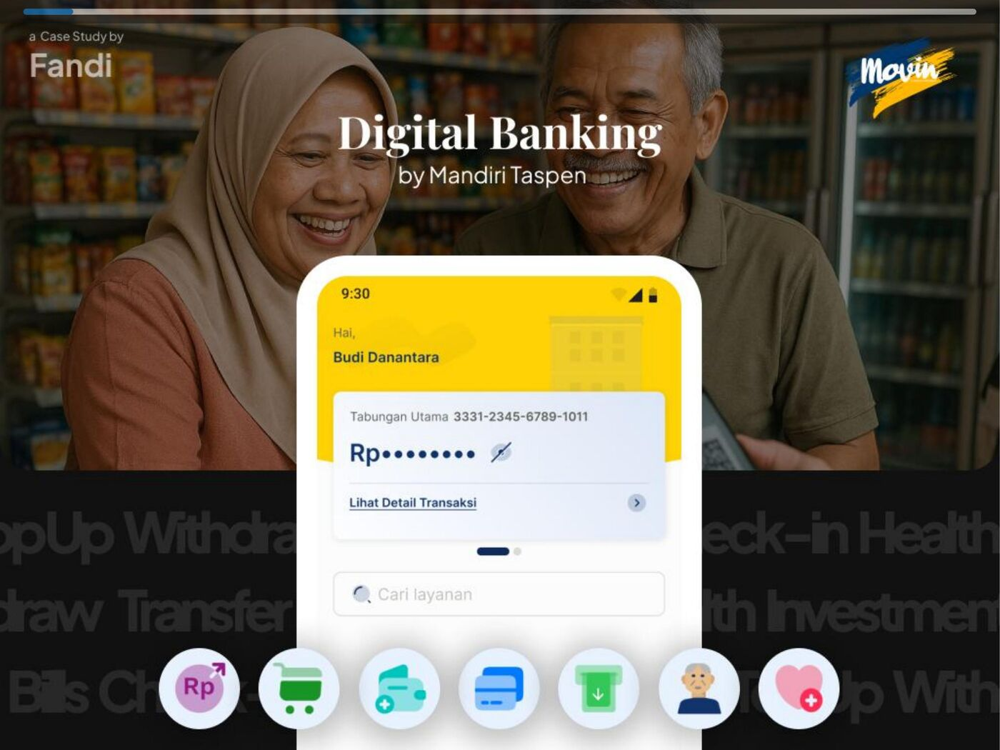

Selected Work

KoinWorks
Redesigned onboarding, built new product lines, and scaled the loyalty system for Indonesia's leading P2P lending platform.
+245% verified users

Mandiri Taspen
Revamped the mobile banking experience for small business users, from e-wallet flows to a new visual identity system.
3.2 → 4.5 app rating

Goers
Redesigned the homepage for better discoverability, simplified the purchase journey, and ran all usability testing for new features.
3 major redesigns

isiruma
Led a cross-functional team to launch an online furniture marketplace during pandemic-era shopping. From research to revenue.
+54% revenue increase